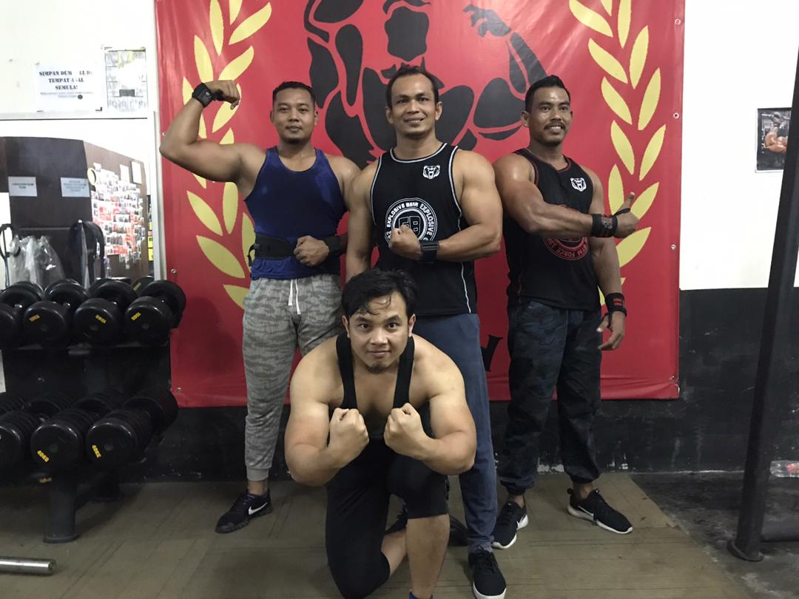

Goalkeeper is the only position that is certain to have existed since the codification of the sport. Even in the early days of organised football, when systems were limited or non-existent and the main idea was for all players to attack and defend, teams had a designated member to play as the goalkeeper. I started as a goalkeeper at the age of 9 and I followed a lot of training at the nearest academy to make sure I can play ball well, I got a lot of support which is the support of my parents. At the age of 12 I was able to represent the state of Terengganu in 2009 to participate in the under 12 league match and my group got 3rd place in the league chart and this gave a very good impact on myself to move forward. while in high school I have decided not to participate in any sport for space for myself to be more focused on learning study. After finishing school, I registered my Diploma at UiTM, then I was called by UiTM sports officials to join the IPT Futsal League and Karisma Futsal League to further raise the name of UiTM among universities in Malaysia. UiTM Terengganu team has occupied the 4 league chart after playing very well and can also bring home a bronze medal in 2017. In 2018 UiTM Terengganu has ranked first in the East Coast IPT Sports League Chart and has had a huge impact on the UiTM sports sector Terengganu.
My Second Hobby

My second hobby is gym sports. I am also interested in gym sports. I will fill my free time by doing gym exercises every day and only holidays on Fridays.